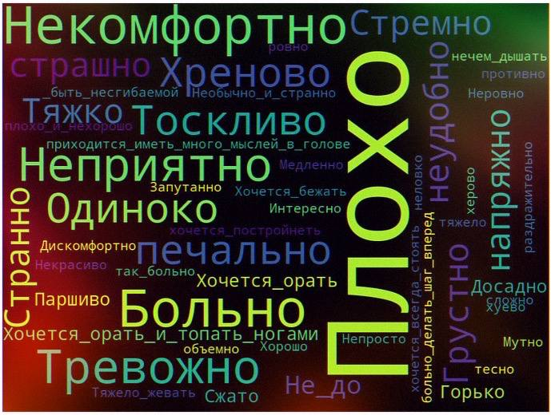

Как с зубами, так и с людьми

Как с зубами, так и с людьми
автор Антон Казаков
Именно такой формулой можно описать то, как мы все выстраиваем коммуникацию друг с другом. Хотя точнее было бы сказать, не “мы все”, а все, кто лечил свои зубы в кресле у стоматолога или собирается это сделать в ближайшее время. О том, с кем мы будем вести себя, как с пустым местом, кого будем задалбывать нравоучениями, кого будем контролировать, кого избегать, от кого будем прятаться, а кого будем хотеть убить - обо всем этом рассказывают проблемы наших зубов. Эта статья про нас и про то, о чём говорят наши зубы.
Проблема
Представьте ситуацию: вы просыпаетесь утром, идете чистить зубы и замечаете, что один из них начал побаливать. Первая мысль? Предлагаю четыре бытовых реакции на выбор:
Здравый смысл в такой ситуации мог бы предложить задуматься над вопросом того, с чего вдруг именно этот зуб и именно сейчас? Неужели вы просто плохо чистили именно этот зуб? Может быть он отвечает за вашего предка, которого вы не поздравили с днем рождения? Может быть сатурн вошел в пятый дом, а там у вас полный бардак? Но здравый смысл касательно зубов зачастую прочно затерт научениями о вреде сладкого и важности чистки зубов. Увы, эти научения не только легко опровергаются, но ещё и не делают нас ни умнее, ни здоровее, ни счастливее.
В процессе психостоматологических исследований я пришел к тому, что существует большое количество трактовок того, почему с нашими зубами происходит что-то неладное. К счастью, ни одна из них не удовлетворила меня настолько, чтобы понять, с чем именно стоит работать, чтобы:
а) этих проблем больше не возникало;
б) мои зубы могли восстанавливаться также, как моя кожа или другие части моего организма.
В результате я познакомился со многими работами замечательных людей, в том числе датского стоматолога Дорте Бредгард, а также разработал и запатентовал психостоматологическую диагностику, которая помогает найти ответ на вопрос: почему у меня возникают проблемы с зубами и как это изменить. Тому, как это изменить будет посвящена отдельная статья, а здесь я расскажу о том, почему с точки зрения психостоматологии возникают проблемы с зубами.
Для этого я предлагаю вернуться в описанную в начале статьи ситуацию, где вы замечаете, что один из зубов начал приносить дискомфорт. А предложенные четыре варианта первичных реакций предлагаю заменить любопытством, и воспользоваться психостоматологической диагностикой. Также, как это сделали сотни человек до вас.
- Вот блин
- Вот сука
- Само рассосется
- Пора к стоматологу
Здравый смысл в такой ситуации мог бы предложить задуматься над вопросом того, с чего вдруг именно этот зуб и именно сейчас? Неужели вы просто плохо чистили именно этот зуб? Может быть он отвечает за вашего предка, которого вы не поздравили с днем рождения? Может быть сатурн вошел в пятый дом, а там у вас полный бардак? Но здравый смысл касательно зубов зачастую прочно затерт научениями о вреде сладкого и важности чистки зубов. Увы, эти научения не только легко опровергаются, но ещё и не делают нас ни умнее, ни здоровее, ни счастливее.
В процессе психостоматологических исследований я пришел к тому, что существует большое количество трактовок того, почему с нашими зубами происходит что-то неладное. К счастью, ни одна из них не удовлетворила меня настолько, чтобы понять, с чем именно стоит работать, чтобы:
а) этих проблем больше не возникало;
б) мои зубы могли восстанавливаться также, как моя кожа или другие части моего организма.
В результате я познакомился со многими работами замечательных людей, в том числе датского стоматолога Дорте Бредгард, а также разработал и запатентовал психостоматологическую диагностику, которая помогает найти ответ на вопрос: почему у меня возникают проблемы с зубами и как это изменить. Тому, как это изменить будет посвящена отдельная статья, а здесь я расскажу о том, почему с точки зрения психостоматологии возникают проблемы с зубами.
Для этого я предлагаю вернуться в описанную в начале статьи ситуацию, где вы замечаете, что один из зубов начал приносить дискомфорт. А предложенные четыре варианта первичных реакций предлагаю заменить любопытством, и воспользоваться психостоматологической диагностикой. Также, как это сделали сотни человек до вас.
Саму диагностику, если потребуется, вы можете пройти позже и абсолютно бесплатно, а пока просто представьте, что вы действительно решили ей воспользоваться.
В результате вы узнали, что в вашей жизни есть кто-то, из-за кого вам не очень. Убежден, что в инфографике ниже вы сможете найти то слово, которое точнее всего описывает, как именно “не очень” вам с кем-то в вашем окружении.

Инфографика "Это из-за него мне так… или из-за неё, а если у вас межзубный кариес, то из-за них"
Стратегия жить в обвиняющей позиции очень удобна, очень нарциссична, очень хорошо помогает получать внимание, обеспечивать моральное превосходство и просто потрясающе помогает потихонечку разрушать отношения. Подозрительно много плюсов на один существенный минус, если у тебя нет детей.
Согласно психостоматологической диагностике, крайней степенью такой стратегии является отсутствие зуба, связанного с партнерскими отношениями, отсутствие самих партнерских отношений и наличие большого ряда моральных убеждений относительно, каким должен быть тот самый партнер или другой человек, связанный с вашим зубом.
- Что не так с зубом?
- Его нет.
- А как с отношениями?
- Их тоже нет, как-то не получается никак…
Основная помеха
Одним из неожиданных открытий психостоматологии стало наблюдение о связи зубов и нашего окружения. Согласно этому наблюдению, за одним зубом скрывается не один человек, а определенный типаж людей, который по каким-то причинам будет нам попадаться снова и снова. Таким образом получается, что можно легко избавиться от зуба, который причиняет боль, но избавиться от людей, которые будут причинять такую же боль оказывается не так уж и легко.
Этим объясняются многие истории необъяснимой боли в зубах после их пролечивания, а иногда и удаления. Казалось бы болеть там больше нечему, а оно болит. Иногда даже не сразу, а через года. Разобраться в таких случаях помогают истории людей, прошедших диагностику. В них они рассказывают о том, как снова и снова им попадаются люди, чье поведение доставляет один и тот же дискомфорт. Лучше всего это наблюдение может продемонстрировать один клиентский случай.
Мария, 42 года. Жалуется на боль в депульпированном зубе с коронкой. В диагностике приходим к тому, что за больным зубом скрывается её сын, который по поведению похож на своего отца (бывшего мужа клиентки), чье поведение очень похоже на поведение её мамы. Со слов женщины, она с радостью ушла из дома по достижению совершеннолетия, работала, училась, встречалась, но из всех мужчин образовала пару именно с тем, кто впоследствии оказался очень похож на её родную маму, что логично привело к разрыву отношений. Однако, на тот момент у неё уже появился ребенок, который позже также стал проявлять неудобное поведение и черты характера, которые лишали Марию улыбки.
На месте ребенка мог бы быть как очередной партнер, после которого спокойно можно было бы сделать вывод, что "все мужики сво...", так и коллега, родственник или кто угодно другой, кто внезапно оказался бы в окружении. Другими словами, есть определенная связь между зубами, окружающими язык, и людьми, окружающими человека. Эти люди, словно разные актеры, играющие одну и ту же роль, появляются снова и снова. Их не получаяется ни исправить, ни вылечить, ни улучшить, а они, в свою очередь, так или иначе напоминают о необходимости работы над своим состоянием и умением выстраивать коммуникацию.
Три вывода можно сделать из вышесказанного:
Этим объясняются многие истории необъяснимой боли в зубах после их пролечивания, а иногда и удаления. Казалось бы болеть там больше нечему, а оно болит. Иногда даже не сразу, а через года. Разобраться в таких случаях помогают истории людей, прошедших диагностику. В них они рассказывают о том, как снова и снова им попадаются люди, чье поведение доставляет один и тот же дискомфорт. Лучше всего это наблюдение может продемонстрировать один клиентский случай.
Мария, 42 года. Жалуется на боль в депульпированном зубе с коронкой. В диагностике приходим к тому, что за больным зубом скрывается её сын, который по поведению похож на своего отца (бывшего мужа клиентки), чье поведение очень похоже на поведение её мамы. Со слов женщины, она с радостью ушла из дома по достижению совершеннолетия, работала, училась, встречалась, но из всех мужчин образовала пару именно с тем, кто впоследствии оказался очень похож на её родную маму, что логично привело к разрыву отношений. Однако, на тот момент у неё уже появился ребенок, который позже также стал проявлять неудобное поведение и черты характера, которые лишали Марию улыбки.
На месте ребенка мог бы быть как очередной партнер, после которого спокойно можно было бы сделать вывод, что "все мужики сво...", так и коллега, родственник или кто угодно другой, кто внезапно оказался бы в окружении. Другими словами, есть определенная связь между зубами, окружающими язык, и людьми, окружающими человека. Эти люди, словно разные актеры, играющие одну и ту же роль, появляются снова и снова. Их не получаяется ни исправить, ни вылечить, ни улучшить, а они, в свою очередь, так или иначе напоминают о необходимости работы над своим состоянием и умением выстраивать коммуникацию.
Три вывода можно сделать из вышесказанного:
- от своего ребенка уйти не так просто, как от родителей или партнеров;
- за позицию жертвы в отношениях приходится платить дорого: одиночеством, зубами и несколько раз стоматологу;
- возможно в нашей жизни есть определенный чем-то или кем-то круг отношений, от которого мы можем бежать через любые выводы и объяснения, но одновременно к этому же кругу отношений мы будем тянуться вновь и вновь. В том числе и через самореализацию.
Возможные решения
Я встречал много людей, которые окружили себя только удобными контактами, сбежали от родителей, с которыми им все же время от времени приходится общаться. Но эти и эти люди, либо жаловались на конфронтации с детьми, либо на неудовлетворенность в самореализации, которая предполагает отношения и коммуникацию.
Я встречал тех, кто ушел с работы и обнаруживал, что у них перестали портиться зубы. А потом эти же люди рассказывали, как из-за скуки они снова возвращались на работу и встречали тех, с кем нужно было находить общий язык. Это не давалось им с улыбкой и у них снова портились зубы.
И ещё я встречал много информации о том, как правильно уходить из отношений, как блокировать абьюзеров и нарциссов, как выстраивать границы с токсичными людьми, как правильно воспитывать, как исправлять, но, увы, ничего из этого не совпадало с тем, что описывали люди в психостоматологической диагностике, когда описывали свое поведение со здоровыми зубами. А это очень здоровое поведение, за которым стоят очень здоровые, счастливые отношения, в которых есть улыбка и смех.
И те, кто выбирали взять на себя ответственность за создание отношений с близкими и работали над своими реакциями и коммуникацией приходили к улучшению состояния своих зубов. Кто-то при очередном посещении стоматолога слышал, что впервые нового кариеса не появилось. Кто-то приходил к тому, что проходила боль и снова начинал жевать на тот зуб, который ранее болел от любого прикосновения. Были и те, кто работал с зубами своих детей и приходил к тому, что зубы детей переставали болеть. Нет никакой фантастики в том, что с зубами можно работать через психику.
Я встречал тех, кто ушел с работы и обнаруживал, что у них перестали портиться зубы. А потом эти же люди рассказывали, как из-за скуки они снова возвращались на работу и встречали тех, с кем нужно было находить общий язык. Это не давалось им с улыбкой и у них снова портились зубы.
И ещё я встречал много информации о том, как правильно уходить из отношений, как блокировать абьюзеров и нарциссов, как выстраивать границы с токсичными людьми, как правильно воспитывать, как исправлять, но, увы, ничего из этого не совпадало с тем, что описывали люди в психостоматологической диагностике, когда описывали свое поведение со здоровыми зубами. А это очень здоровое поведение, за которым стоят очень здоровые, счастливые отношения, в которых есть улыбка и смех.
И те, кто выбирали взять на себя ответственность за создание отношений с близкими и работали над своими реакциями и коммуникацией приходили к улучшению состояния своих зубов. Кто-то при очередном посещении стоматолога слышал, что впервые нового кариеса не появилось. Кто-то приходил к тому, что проходила боль и снова начинал жевать на тот зуб, который ранее болел от любого прикосновения. Были и те, кто работал с зубами своих детей и приходил к тому, что зубы детей переставали болеть. Нет никакой фантастики в том, что с зубами можно работать через психику.
Возможность
Зубы и отношения - именно с этим работает Психостоматология №1. Мы умеем читать по зубам и по КТ можем рассказать об отношениях в жизни человека. Мы знаем, как легко посылать других, мстить и выходить из проблемных отношений, но работаем с тем, чтобы находить общий язык и укреплять отношения. Мы развиваем новый подход в работе со здоровьем зубов и отношений и помогаем всем, кто в этом также заинтересован.
Поэтому, если вас беспокоят зубы и вы допускаете мысль о том, что это может быть связано с вашими отношениями с кем-то - добро пожаловать на на бесплатную психостоматологическую диагностику. А ещё вам может понравиться статья о нейрофизиологии отношений. Там вы узнаете о том, с кем мы боремся за счастье в этой жизни.
Поэтому, если вас беспокоят зубы и вы допускаете мысль о том, что это может быть связано с вашими отношениями с кем-то - добро пожаловать на на бесплатную психостоматологическую диагностику. А ещё вам может понравиться статья о нейрофизиологии отношений. Там вы узнаете о том, с кем мы боремся за счастье в этой жизни.
👉 Перейти к статье 👈